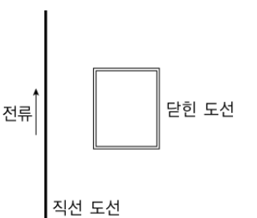

전자기 유도: 로렌츠 힘으로 설명할 수 없는 현상 찾기, 패러데이 법칙 검증 실험 계획, 가설-연역적 순환학습으로 재구성Electromagnetic induction · phenomena not explained by the Lorentz force · planning a Faraday-law experiment · hypothetico-deductive learning cycle
다음은 전자기 유도에 관련된 내용이다. 물음에 답하시오. 【30점】
- 자석을 코일에 넣었다 뺐다 하면 전류가 흐른다 — 코일을 지나는 자기장이 변할 때만.
- 직선 전류 둘레 자기장 \(B=\dfrac{\mu_0I}{2\pi r}\) — 도선에서 멀수록 약하다.
- 자기장 속에서 움직이는 전하는 로렌츠 힘 \(F=qvB\)를 받는다 — 전하가 정지해 있으면 0.
3-1. 로렌츠 힘으로 설명할 수 없는 현상과 패러데이 법칙 검증 실험 계획 [20점]

패러데이 법칙에 대한 지식이나 자속에 대한 개념이 전혀 없는 학생에게 물리 교사가 그림의 실험 개략도와 같은 장치를 이용하여 다음과 같은 전자기 유도 실험을 보여 주었다.
(가) 실험대에 긴 직선 도선을 놓고 가변 전원에 연결하여 전류를 흐르게 한다.
(나) 모양을 바꿀 수 없는 직사각형 닫힌 도선을 세로 변이 직선 도선과 나란하게 실험대 위에 놓는다.
(다) 직선 도선은 움직이지 않은 채 닫힌 도선을 실험대 면을 따라 직선 도선에 수직인 방향으로 가까이 또는 멀리 움직이면서 닫힌 도선에 기전력이 생기는지를 측정한다. (이때 닫힌 도선에는 기전력을 측정할 수 있는 장치가 연결되어 있다.)
이 실험에서 닫힌 도선이 움직일 때 기전력이 유도되는 ‘현상’과 닫힌 도선의 움직임이 빠를수록 유도 기전력이 큰 것을 보여준 교사는 기전력이 생긴 이유가 닫힌 도선이 움직일 때 전류가 흐르는 직선 도선 주위에 생긴 자기장이 닫힌 도선 안에 있는 전자에 자기력, 즉 로렌츠 힘을 작용했기 때문이라고 설명했다. 그런 후에 교사는 학생에게 같은 장치를 이용하여 닫힌 도선에 기전력을 유도하는 다른 방법이 있는지 알아보라고 했다. 이때, 모든 도선은 항상 실험대 위에 있어야 하고 회전시켜서도 안 되며, 닫힌 도선의 세로 변은 직선 도선과 평행을 유지해야 한다는 조건을 주었다.
학생 : 닫힌 도선에 유도된 기전력이 로렌츠 힘 때문이라고 할 수 없는 ‘현상’을 두 개 발견했습니다.
교사 : 어떤 경우들인지 학생이 관찰한 것을 자세히 설명해 보세요.
학생 : ( ㉠ )
교사 : 그렇다면, 학생의 실험에 근거하여 로렌츠 힘 때문에 기전력이 유도된다는 내 설명을 수정해야겠네요. 내가 보여준 ‘현상’과 학생이 발견한 두 ‘현상’만 고려한다면 유도 기전력은 어떤 경우에 생긴다고 하는 것이 합리적일까요? 세 ‘현상’의 분석과 함께 설명해 보세요.
학생 : ( ㉡ )
교사 : 전자기 유도와 관련하여 패러데이가 발표한 ‘닫힌 도선에 유도되는 기전력의 크기는 닫힌 도선을 지나는 자속의 시간 변화율에 비례한다’는 이론이 있어요. 패러데이 이론에서 자속 \(\Phi\)는 자기장을 \(\vec B\), 닫힌 도선 안의 면적 요소를 \(d\vec A\)라고 할 때 \(\Phi=\int\vec B\cdot d\vec A\)로 정의되는 값입니다. 외부 자기장이 차폐된 실험실에서, 세기를 임의로 조절할 수 있는 균일한 자기장을 발생시키는 전자석과, 면이 자기장에 항상 수직이며 내부 면적을 조절할 수 있는 직사각형 모양의 닫힌 도선을 이용하여 패러데이 이론을 정량적으로 검증해 봅시다. 이를 위해 패러데이 이론의 수식을 실험 상황에 적합한 형식으로 전개하고, 장치를 어떻게 구성하고, 변인을 어떻게 통제하면서 측정하고, 측정 데이터는 어떻게 분석해야 하는지를 포함한 구체적인 실험 계획서를 작성하여 제출하세요. 실험 계획서에는 필요한 개략도와 적당한 양식의 데이터 기록표, 패러데이 이론이 측정 데이터와 맞는지를 최종 확인하는데 사용할 그래프 양식을 포함시키세요.
이 실험 수업을 하기 전에 학생에게 패러데이 법칙에 대한 지식이나 자속에 대한 개념이 전혀 없었음을 고려하여, ㉠과 ㉡에 들어갈 학생의 옳은 대답을 각각 기술하고, 교사의 요구에 적합한 실험 계획서를 작성하시오. [20점]
㉠에 들어갈 학생의 옳은 대답 — 기전력이 로렌츠 힘 때문이라고 할 수 없는 두 ‘현상’을 기술하시오.
- 로렌츠 힘 \(q\vec v\times\vec B\)가 0이 되려면 닫힌 도선 속 전자는 어떤 상태여야 하나?
- 조건(실험대 위, 회전 금지, 세로 변 평행) 안에서 바꿀 수 있는 것은 무엇이 남는가? — 가변 전원, 직선 도선의 위치.
㉡에 들어갈 학생의 옳은 대답 — 세 ‘현상’을 분석하여 유도 기전력이 어떤 경우에 생긴다고 하는 것이 합리적인지 설명하시오.
- 세 현상에서 공통으로 변하는 것은? 닫힌 도선의 위치에서 자기장의 세기를 생각해 보자.
- 학생은 ‘자속’이라는 말을 모른다 — 어떤 말로 표현해야 할까?
교사의 요구(수식 전개, 장치 구성·개략도, 변인 통제와 측정, 데이터 기록표, 분석 그래프 양식)에 적합한 실험 계획서를 작성하시오.
- 균일한 \(B\)가 면에 수직이면 \(\Phi=BA\). 그러면 \(\dfrac{d\Phi}{dt}=?\)
- 두 항을 따로 검증하려면 무엇을 고정하고 무엇을 바꿔야 하나?
- ‘맞는지 최종 확인’하는 그래프 — 가로축과 세로축은?
3-2. 가설-연역적 순환학습으로 재구성 [10점]
위에서 제시한 학생과 교사와의 <대화 내용>을 ‘순환학습(Learning Cycle)’ 모형으로 분석해 보려고 한다. 순환학습의 세 가지 유형 중, 가설을 제안하고 검증하는 과정으로 구성된 ‘가설-연역적 순환학습’에 적합하게 위 <대화 내용>을 3단계로 재구성하시오. (단, 재구성할 때 대화 내용의 순서를 바꾸거나 필요한 대화 내용을 추가할 수 있고 약간의 표현 수정은 가능하지만, 주어진 내용을 없앨 수는 없다.) [10점]
<대화 내용>(교사의 시연·설명 포함)을 가설-연역적 순환학습의 3단계(탐색 – 용어 도입 – 개념 적용)로 재구성하시오.
- 로슨의 세 유형: 서술적, 경험-귀추적, 가설-연역적. 가설-연역적 유형의 탐색 단계에서 학생은 무엇을 하는가?
- 교사의 ‘로렌츠 힘 설명’은 이 모형에서 무엇의 역할을 하는가? — 검증할 가설.
- ‘~라면 ~일 것이다’ 꼴의 예측 대화를 추가해 보자.